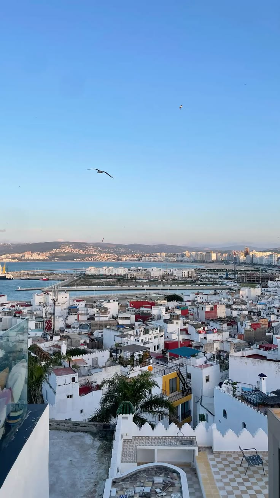
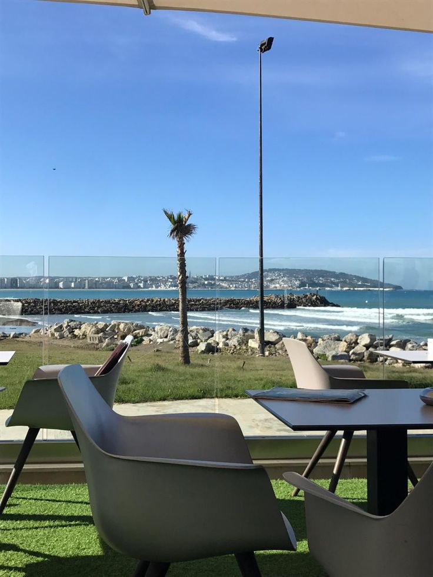

Activités à Tanger

La Médina historique
Perdez-vous dans les ruelles de la vieille ville, découvrez le Grand Socco et le Petit Socco, et explorez la Kasbah avec ses vues panoramiques sur le détroit de Gibraltar.

Plage de Tanger & Malabata
La grande plage de Tanger s'étend sur plusieurs kilomètres. Profitez des sports nautiques, du surf ou d'une simple balade au coucher du soleil face à l'océan Atlantique.

Cap Spartel & Grottes d'Hercule
À quelques km de Tanger, visitez le Cap Spartel où l'Atlantique rencontre la Méditerranée, et explorez les mystérieuses Grottes d'Hercule creusées par la mer.

Musée de la Kasbah
Installé dans l'ancien palais du Dar el Makhzen, ce musée abrite des collections d'art marocain, de mosaïques romaines et de manuscrits précieux du patrimoine tangérois.

Vue sur le Détroit de Gibraltar
Par temps clair, vous pouvez voir les côtes espagnoles depuis la Kasbah. Une excursion en bateau vous fera traverser le mythique détroit entre deux continents.

Souks & Marchés traditionnels
Le Grand Socco et les souks de la médina regorgent d'épices, de textiles, de poteries et d'artisanat berbère. Une expérience sensorielle unique à ne pas manquer.